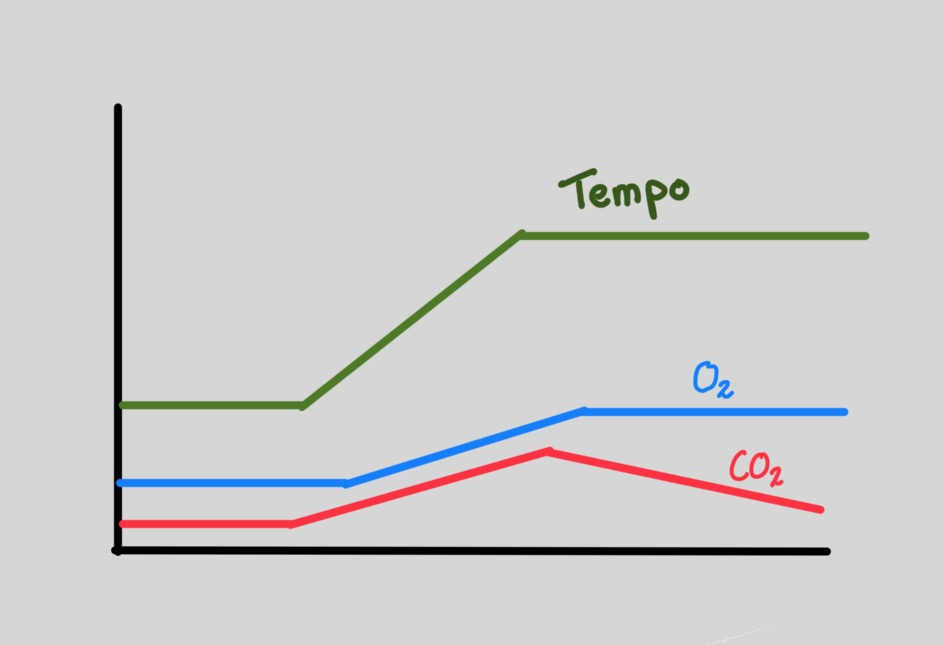

Thresholds
Planning
Deze les gaan we in op wat thresholds zijn, en hoe we ermee kunnen trainen. het is handig om de app ErgData te downloaden (IOS) of (Android)
- Uitleg threshold
- Algemene warming up en werken met de app
- Interval training
- Core

Wat is uithoudingsvermogen
Uithoudingsvermogen is het vermogen om iets een langere tijd vol te houden, bijvoorbeeld een hoog tempo lang te kunnen fietsen.
Om een hoog tempo lang te kunnen fietsen is het belangrijk dat je genoeg brandstof hebt (genoeg hebt gegeten), maar ook hoe goed je bent om deze brandstof om te zetten in beweging. Hierbij is de hoeveelheid zuurstof die je kan omzetten in energie belangrijk. Als je veel zuurstof met brandstof kan combineren is je uithoudingsvermogen hoger.
Een mooi voorbeeld zijn de beenspieren en longen als je rustig begint met fietsen. In rust heeft je lichaam niet zoveel energie nodig, dus is je hartslag en ademhaling laag. Omdat de ademhaling laag is haal je niet zoveel zuurstof uit de lucht, en omdat de harstlag laag is, pomp je het bloed met zuurstof niet zo snel rond. Als je nu begint met fietsen, heeft de spier opeens meer zuurstof nodig dan dat die krijgt. De spier kan de energie wel leveren, maar moet dit doen zonder zuurstof, waardoor die een beetje verzuurt. Spieren kunnen behoorlijk verzuren voordat het een probleem wordt, maar als je het lang wilt volhouden moet er wel meer zuurstof naar de spier, anders verzuur je!
Doordat de spier (zowel met als zonder zuurstof) energie omzet in CO2, stijgt de hoeveelheid CO2 in het bloed. Pas als je hart en longen merken dat er meer CO2 in het bloed zit, gaan ze harder werken!
Dit is een mooi mechanisme, want ademhalen en een hoge hartslag kosten ook energie, die je niet in de fiets kan stoppen. En doordat de hartslag en ademhaling gekoppeld zijn aan hoe hard je werkt, haal je nooit “te hard” adem, wat teveel energie zou kosten!
Als je spier dus een klein beetje harder gaat werken, verzuurt die een klein beetje, waardoor je hart en longen wat harder gaan werken, waardoor de spier weer meer zuurstof krijgt, en die niet meer verzuurt (of zelfs een beetje herstelt!)

Het opgang komen van de hartslag en ademhaling duurt even, want de spier moet eerst een klein beetje verzuren om de ademhaling op gang te krijgen. Een goeie warming up is dus belangrijk, omdat het best een minuut of 10 kan duren voordat het hele systeem op gang kan komen en je zo veel mogelijk zuurstof uit de lucht kan halen.
Als je rustig gaat fietsen, is er een mooie verhouding tussen de CO2 die je uitademnt, en de zuurstof die je inademt. (doordat je meer CO2 uitademt, adem je meer O2 in!).
Maar als je wat harder gaat fietsen, komt er een punt waarop de beenspieren koolhydraten gaan verbranden in plaats van vet. Met koolhydraten kan je namelijk sneller energie leveren, maar met koolhydraten komt er per ingeademde zuurstof meer CO2 vrij. En doordat de CO2 voor een hogere ademhaling en hartslag zorgt, weet je dat zodra de verhouding tussen de CO2 die je uitademt, en de zuurstof die je inademt, je koolhydraten aan het verbranden bent. Dit noemen ze het eerste ventilatoire threshold (VT1).
Als we nou echt hard gaan fietsen, en de beenspieren niet meer genoeg zuurstof krijgen om alle brandstoffen om te zetten in energie, gaan ze verzuren. Verzuring zorgt er ook voor dat je ademhaling en hartslag harder gaan werken, dus verandert de verouding tussen hoe hard je werkt, en de zuurstof die je opneemt weer! Dit noemen ze de tweede ventilatoire threshold, en geeft precies aan hoeveel zuurstof je kunt omzetten in energie. A
Je kunt wel harder fietsen dan je tweede ventilatoire threshold, maar dan ga je verzuren. Maar door die verzuring neemt je hartslag en ademhaling toe, en kan je, ondanks dat je verzuurt, wel meer zuurstof opnemen. Je maximale zuurstofopname (VO2 max) zegt daarom niet perse welk tempo je lang kunt volhouden, maar over het algemeen geldt wel hoe hoger de VO2 max, hoe hoger je tweede ventilatoire threshold.
Om precies te meten hoeveel zuurstof je kunt opnemen zou je naar het lab moeten gaan, maar op basis van de 20 minuten test (FTP test) kunnen we een hele goede inschatting maken welk tempo je moet fietsen om op dat threshold te trainen. De berekening is vaak dat 95% van je FTP2 je threshold pace is, en dat die laatste 5% de energie is die je uit verzuring hebt geleverd.
Hoe train je hiermee
Het is goed om je af te vragen hoe zinvol dit allemaal is. Als je gewoon komt trainen en je best doet wordt je harstikke fit, ook zonder te weten wat je threshold is. Als je specifiek wilt trainen hangt het ervan af wat je doel is.
Bij beginners en sprinters is het vaak het probleem dat ze niet genoeg energie in de fiets kunnen krijgen. Dan geldt dat een grotere spier meer energie in de fiets kan stoppen, en is het misschien goed om kracht of sprinttraining te gaan doen. Om conditie en uithoudingsvermogen op te bouwen is het goed om veel lange duurtrainin te fietsen, waar bijvoorbeeld je hart en longen goed fit van worden,
Maar als je doel is om een hoger tempo langer vast te houden, en dus je tweede ventilatoire threshold hoger te krijgen, is het goed om interval training te doen. Met intervaltraining werk je net een tijdje boven je threshold, waardoor je daaran gewend raakt; en zit je er net even onder, zodat je kunt herstellen. Hiermee heb je in de training zoveel mogelijk tijd boven je threshold getraind waardoor die zo goed mogelijk adapteert. Dit kan je prima op gevoel doen zonder te weten waar je threshold ligt, maar het is en goed om te begrijpen hoe thresholds werken, maar ook goed om meetbaar te maken wat je progressie is!

Meer weten?